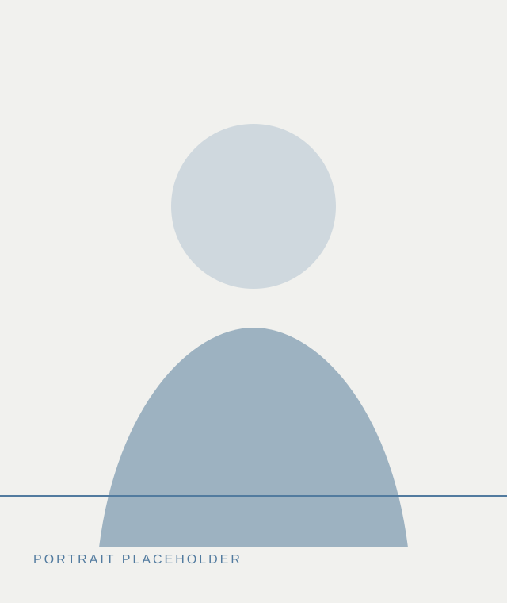
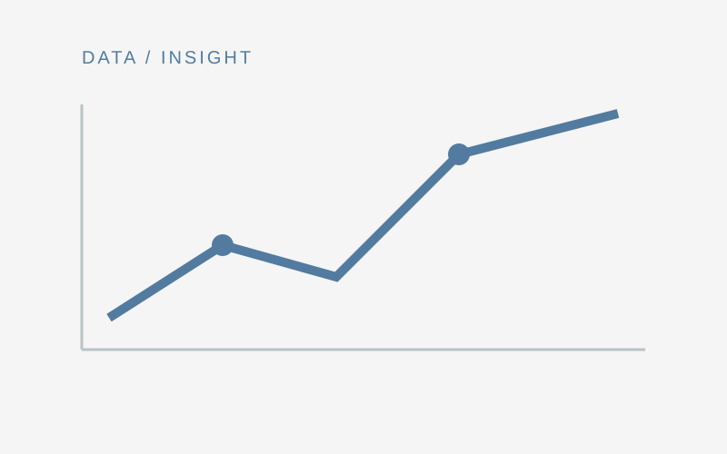
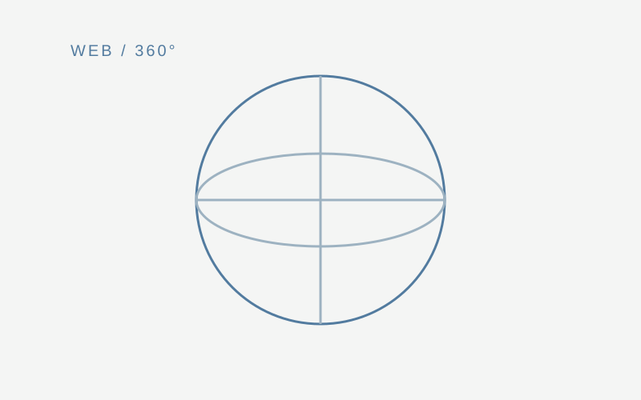

Portfolio
Qijing Zhang
Product Manager
UX Designer
Former University Lecturer
Designing meaningful digital experiences through product thinking, user-centered design, and data visualization.

Collections
Selected work organized around interactive visualization, teaching practice and user experience.

Collection 01
Interactive Data Visualization
A collection of data stories, dashboards and interactive visualization work, including Pop Bike, D3.js, Tableau and Power BI.

Collection 02
Teaching & UX Design
Student outcomes across mobile apps, UI and UX design, web design, WebVR and interaction design.
About
I have nearly ten years of experience across product management, UX design, digital media, and higher education. My work focuses on creating meaningful digital experiences that combine design thinking, technology, and data visualization.